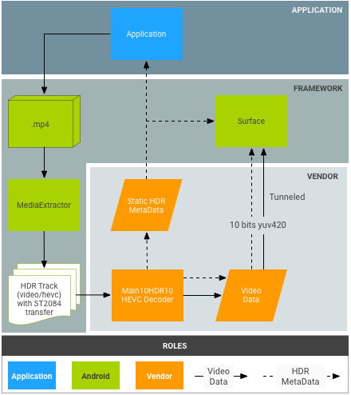
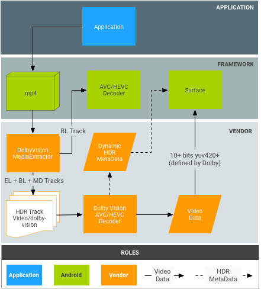
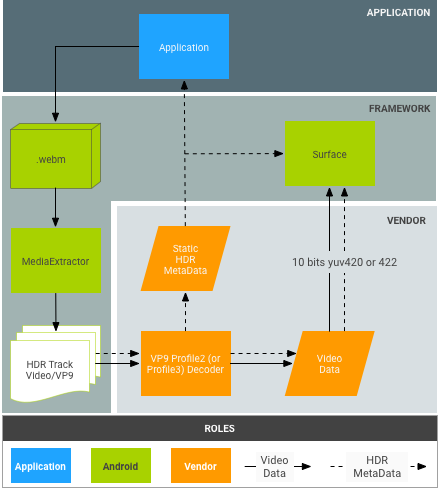

High dynamic range (HDR) video is the next frontier in high-quality video decoding, bringing unmatched scene reproduction qualities. It does so by significantly increasing the dynamic range of the luminance component (from the current 100 cd/m2 to 1000s of cd/m2) and by using a much wider color space (BT 2020). This is now a central element of the 4K UHD evolution in the TV space.
In Android 7.0, initial HDR support has been added, which includes the creation of proper constants for the discovery and setup of HDR video pipelines. That means defining codec types and display modes and specifying how HDR data must be passed to MediaCodec and supplied to HDR decoders. HDR is only supported in tunneled video playback mode.
The purpose of this document is to help application developers support HDR stream playback, and help OEMs and SOCs enable the HDR features on Android 7.0.
Supported HDR technologies
As of Android 7.0 release, the following HDR technologies are supported.
| Technology | Dolby-Vision | HDR10 | VP9-HLG | VP9-PQ |
|---|---|---|---|---|
| Codec | AVC/HEVC | HEVC | VP9 | VP9 |
| Transfer Function | ST-2084 | ST-2084 | HLG | ST-2084 |
| HDR Metadata Type | Dynamic | Static | None | Static |
In Android 7.0, only HDR playback via tunneled mode is defined, but devices may add support for playback of HDR on SurfaceViews using opaque video buffers. In other words:
- There is no standard Android API to check if HDR playback is supported using non-tunneled decoders.
- Tunneled video decoders that advertise HDR playback capability must support HDR playback when connected to HDR-capable displays.
- GL composition of HDR content is not supported by the AOSP Android 7.0 release.
Discovery
HDR Playback requires an HDR-capable decoder and a connection to an HDR-capable display. Optionally, some technologies require a specific extractor.
Display
Applications shall use the new Display.getHdrCapabilities
API to query the HDR technologies supported by the specified display. This is
basically the information in the EDID Static Metadata Data Block as defined
in CTA-861.3:
public Display.HdrCapabilities getHdrCapabilities()
Returns the display's HDR capabilities.Display.HdrCapabilities
Encapsulates the HDR capabilities of a given display. For example, what HDR types it supports and details about the desired luminance data.
Constants:
int HDR_TYPE_DOLBY_VISION
Dolby Vision support.int HDR_TYPE_HDR10
HDR10 / PQ support.int HDR_TYPE_HLG
Hybrid Log-Gamma support.float INVALID_LUMINANCE
Invalid luminance value.
Public Methods:
float getDesiredMaxAverageLuminance()
Returns the desired content max frame-average luminance data in cd/cd/m2 for this display.float getDesiredMaxLuminance()
Returns the desired content max luminance data in cd/cd/m2 for this display.float getDesiredMinLuminance()
Returns the desired content min luminance data in cd/cd/m2 for this display.int[] getSupportedHdrTypes()
Gets the supported HDR types of this display (see constants). Returns empty array if HDR is not supported by the display.
Decoder
Applications shall use the existing
CodecCapabilities.profileLevels API to verify support for the
new HDR capable profiles:
Dolby-Vision
MediaFormat mime constant:
String MIMETYPE_VIDEO_DOLBY_VISION
MediaCodecInfo.CodecProfileLevel profile constants:
int DolbyVisionProfileDvavPen int DolbyVisionProfileDvavPer int DolbyVisionProfileDvheDen int DolbyVisionProfileDvheDer int DolbyVisionProfileDvheDtb int DolbyVisionProfileDvheDth int DolbyVisionProfileDvheDtr int DolbyVisionProfileDvheStn
Dolby Vision video layers and metadata must be concatenated into a single buffer per frames by video applications. This is done automatically by the Dolby-Vision capable MediaExtractor.
HEVC HDR 10
MediaCodecInfo.CodecProfileLevel profile constants:
int HEVCProfileMain10HDR10
VP9 HLG & PQ
MediaCodecInfo.CodecProfileLevel profile
constants:
int VP9Profile2HDR int VP9Profile3HDR
If a platform supports an HDR-capable decoder, it shall also support an HDR-capable extractor.
Only tunneled decoders are guaranteed to play back HDR content. Playback by non-tunneled decoders may result in the HDR information being lost and the content being flattened into an SDR color volume.
Extractor
The following containers are supported for the various HDR technologies on Android 7.0:
| Technology | Dolby-Vision | HDR10 | VP9-HLG | VP9-PQ |
|---|---|---|---|---|
| Container | MP4 | MP4 | WebM | WebM |
Discovery of whether a track (of a file) requires HDR support is not supported by the platform. Applications may parse the codec-specific data to determine if a track requires a specific HDR profile.
Summary
Component requirements for each HDR technology are shown in the following table:
| Technology | Dolby-Vision | HDR10 | VP9-HLG | VP9-PQ |
|---|---|---|---|---|
| Supported HDR type (Display) | HDR_TYPE_DOLBY_VISION | HDR_TYPE_HDR10 | HDR_TYPE_HLG | HDR_TYPE_HDR10 |
| Container (Extractor) | MP4 | MP4 | WebM | WebM |
| Decoder | MIMETYPE_VIDEO_DOLBY_VISION | MIMETYPE_VIDEO_HEVC | MIMETYPE_VIDEO_VP9 | MIMETYPE_VIDEO_VP9 |
| Profile (Decoder) | One of the Dolby profiles | HEVCProfileMain10HDR10 | VP9Profile2HDR or VP9Profile3HDR | VP9Profile2HDR or VP9Profile3HDR |
Notes:
- Dolby-Vision bitstreams are packaged in an MP4 container in a way defined by Dolby. Applications may implement their own Dolby-capable extractors as long as they package the access units from the corresponding layers into a single access unit for the decoder as defined by Dolby.
- A platform may support an HDR-capable extractor, but no corresponding HDR-capable decoder.
Playback
After an application has verified support for HDR playback, it can play back HDR content nearly the same way as it plays back non-HDR content, with the following caveats:
- For Dolby-Vision, whether or not a specific media file/track requires an HDR capable decoder is not immediately available. The application must have this information in advance or be able to obtain this information by parsing the codec-specific data section of the MediaFormat.
CodecCapabilities.isFormatSupporteddoes not consider whether the tunneled decoder feature is required for supporting such a profile.
Enabling HDR platform support
SoC vendors and OEMs must do additional work to enable HDR platform support for a device.
Platform changes in Android 7.0 for HDR
Here are some key changes in the platform (Application/Native layer) that OEMs and SOCs need to be aware of.
Display
Hardware composition
HDR-capable platforms must support blending HDR content with non-HDR content. The exact blending characteristics and operations are not defined by Android as of release 7.0, but the process generally follows these steps:
- Determine a linear color space/volume that contains all layers to be
composited, based on the layers' color, mastering, and potential dynamic
metadata.
If compositing directly to a display, this could be the linear space that matches the display's color volume. - Convert all layers to the common color space.
- Perform the blending.
- If displaying through HDMI:
- Determine the color, mastering, and potential dynamic metadata for the blended scene.
- Convert the resulting blended scene to the derived color space/volume.
- If displaying directly to the display, convert the resulting blended scene to the required display signals to produce that scene.
Display discovery
HDR display discovery is only supported via HWC2. Device implementers must selectively enable the HWC2 adapter that is released with Android 7.0 for this feature to work. Therefore, platforms must add support for HWC2 or extend the AOSP framework to allow a way to provide this information. HWC2 exposes a new API to propagate HDR Static Data to the framework and the application.
HDMI
- A connected HDMI display advertises its HDR capability through HDMI EDID as defined in CTA-861.3 section 4.2.
- The following EOTF mapping shall be used:
- ET_0 Traditional gamma - SDR Luminance Range: not mapped to any HDR type
- ET_1 Traditional gamma - HDR Luminance Range: not mapped to any HDR type
- ET_2 SMPTE ST 2084 - mapped to HDR type HDR10
- The signaling of Dolby Vision or HLG support over HDMI is done as defined by their relevant bodies.
- Note that the HWC2 API uses float desired luminance values, so the 8-bit EDID values must be translated in a suitable fashion.
Decoders
Platforms must add HDR-capable tunneled decoders and advertise their HDR support. Generally, HDR-capable decoders must:
- Support tunneled decoding (
FEATURE_TunneledPlayback). - Support HDR static metadata
(
OMX.google.android.index.describeHDRColorInfo) and its propagation to the display/hardware composition. For HLG, appropriate metadata must be submitted to the display. - Support color description
(
OMX.google.android.index.describeColorAspects) and its propagation to the display/hardware composition. - Support HDR embedded metadata as defined by the relevant standard.
Dolby Vision decoder support
To support Dolby Vision, platforms must add a Dolby-Vision capable HDR OMX decoder. Given the specifics of Dolby Vision, this is normally a wrapper decoder around one or more AVC and/or HEVC decoders as well as a compositor. Such decoders must:
- Support mime type "video/dolby-vision."
- Advertise supported Dolby Vision profiles/levels.
- Accept access units that contain the sub-access-units of all layers as defined by Dolby.
- Accept codec-specific data defined by Dolby. For example, data containing Dolby Vision profile/level and possibly the codec-specific data for the internal decoders.
- Support adaptive switching between Dolby Vision profiles/levels as required by Dolby.
When configuring the decoder, the actual Dolby profile is not communicated to the codec. This is only done via codec-specific data after the decoder has been started. A platform could choose to support multiple Dolby Vision decoders: one for AVC profiles, and another for HEVC profiles to be able to initialize underlying codecs during configure time. If a single Dolby Vision decoder supports both types of profiles, it must also support switching between those dynamically in an adaptive fashion.
If a platform provides a Dolby-Vision capable decoder in addition to the general HDR decoder support, it must:
- Provide a Dolby-Vision aware extractor, even if it does not support HDR playback.
- Provide a decoder that supports the vision profile as defined by Dolby.
HDR10 decoder support
To support HDR10, platforms must add an HDR10-capable OMX decoder. This is normally a tunneled HEVC decoder that also supports parsing and handling HDMI related metadata. Such a decoder (in addition to the general HDR decoder support) must:
- Support mime type "video/hevc."
- Advertise supported HEVCMain10HDR10. HEVCMain10HRD10 profile support also requires supporting the HEVCMain10 profile, which requires supporting the HEVCMain profile at the same levels.
- Support parsing the mastering metadata SEI blocks, as well as other HDR related info contained in SPS.
VP9 decoder support
To support VP9 HDR, platforms must add a VP9 Profile2-capable HDR OMX decoder. This is normally a tunneled VP9 decoder that also supports handling HDMI related metadata. Such decoders (in addition to the general HDR decoder support) must:
- Support mime type "video/x-vnd.on2.vp9."
- Advertise supported VP9Profile2HDR. VP9Profile2HDR profile support also requires supporting VP9Profile2 profile at the same level.
Extractors
Dolby Vision extractor support
Platforms that support Dolby Vision decoders must add Dolby extractor (called Dolby Extractor) support for Dolby Video content.
- A regular MP4 extractor can only extract the base layer from a file, but not the enhancement or metadata layers. So a special Dolby extractor is needed to extract the data from the file.
- The Dolby extractor must expose 1 to 2 tracks for each Dolby video track
(group):
- A Dolby Vision HDR track with the type of "video/dolby-vision" for the combined 2/3-layers Dolby stream. The HDR track's access-unit format, which defines how to package the access units from the base/enhancement/metadata layers into a single buffer to be decoded into a single HDR frame, is to be defined by Dolby.
- If a Dolby Vision video track contains a separate (backward compatible) base-layer (BL), the extractor must also expose this as a separate "video/avc" or "video/hevc" track. The extractor must provide regular AVC/HEVC access units for this track.
- The BL track must have the same track-unique-ID ("track-ID") as the HDR track so the app understands that these are two encodings of the same video.
- The application can decide which track to choose based on the platform's capability.
- The Dolby Vision profile/level must be exposed in the track format of the HDR track.
- If a platform provides a Dolby-Vision capable decoder, it must also provide a Dolby-Vision aware extractor, even if it does not support HDR playback.
HDR10 and VP9 HDR extractor support
There are no additional extractor requirements to support HDR10 or VP9 HLG. Platforms must extend MP4 extractor to support VP9 PQ in MP4. HDR static metadata must be propagated in the VP9 PQ bitstream, such that this metadata is passed to the VP9 PQ decoder and to the display via the normal MediaExtractor => MediaCodec pipeline.
Stagefright extensions for Dolby Vision support
Platforms must add Dolby Vision format support to Stagefright:
- Support for port definition query for compressed port.
- Support profile/level enumeration for DV decoder.
- Support exposing DV profile/level for DV HDR tracks.
Technology-specific implementation details
HDR10 decoder pipeline

Figure 1. HDR10 pipeline
HDR10 bitstreams are packaged in MP4 containers. Applications use a regular MP4 extractor to extract the frame data and send it to the decoder.
- MPEG4 Extractor
HDR10 bitstreams are recognized as just a normal HEVC stream by a MPEG4Extractor and the HDR track with the type "video/HEVC" will be extracted. The framework picks an HEVC video decoder that supports the Main10HDR10 profile to decode that track. - HEVC Decoder
HDR information is in either SEI or SPS. The HEVC decoder first receives frames that contain the HDR information. The decoder then extracts the HDR information and notifies the application that it is decoding an HDR video. HDR information is bundled into decoder output format, which is propagated to the surface later.
Vendor actions
- Advertise supported HDR decoder profile and level OMX type. Example:
OMX_VIDEO_HEVCProfileMain10HDR10(andMain10) - Implement support for index:
'
OMX.google.android.index.describeHDRColorInfo' - Implement support for index:
'
OMX.google.android.index.describeColorAspects' - Implement support for SEI parsing of mastering metadata.
Dolby Vision decoder pipeline

Figure 2. Dolby Vision pipeline
Dolby-bitstreams are packaged in MP4 containers as defined by Dolby. Applications could, in theory, use a regular MP4 extractor to extract the base layer, enhancement layer, and metadata layer independently; however, this does not fit the current Android MediaExtractor/MediaCodec model.
- DolbyExtractor:
- Dolby-bitstreams are recognized by a DolbyExtractor, which exposes the
various layers as 1 to 2 tracks for each dolby video track (group):
- An HDR track with the type of "video/dolby-vision" for the combined 2/3-layers dolby stream. The HDR track's access-unit format, which defines how to package the access units from the base/enhancement/metadata layers into a single buffer to be decoded into a single HDR frame, is to be defined by Dolby.
- (Optional, only if the BL is backward compatible) A BL track contains only the base layer, which must be decodable by regular MediaCodec decoder, for example, AVC/HEVC decoder. The extractor should provide regular AVC/HEVC access units for this track. This BL track must have the same track-unique-ID ("track-ID") as the Dolby track so the application understands that these are two encodings of the same video.
- The application can decide which track to choose based on the platform's capability.
- Because an HDR track has a specific HDR type, the framework will pick a Dolby video decoder to decode that track. The BL track will be decoded by a regular AVC/HEVC video decoder.
- Dolby-bitstreams are recognized by a DolbyExtractor, which exposes the
various layers as 1 to 2 tracks for each dolby video track (group):
- DolbyDecoder:
- The DolbyDecoder receives access units that contain the required access units for all layers (EL+BL+MD or BL+MD)
- CSD (codec specific data, such as SPS+PPS+VPS) information for the individual layers can be packaged into 1 CSD frame to be defined by Dolby. Having a single CSD frame is required.
Dolby actions
- Define the packaging of access units for the various Dolby container schemes (e.g. BL+EL+MD) for the abstract Dolby decoder (i.e. the buffer format expected by the HDR decoder).
- Define the packaging of CSD for the abstract Dolby decoder.
Vendor actions
- Implement Dolby extractor. This can also be done by Dolby.
- Integrate DolbyExtractor into the framework. The entry point is
frameworks/av/media/libstagefright/MediaExtractor.cpp. - Declare HDR decoder profile and level OMX
type. Example:
OMX_VIDEO_DOLBYPROFILETYPEandOMX_VIDEO_DOLBYLEVELTYP. - Implement support for index:
'OMX.google.android.index.describeColorAspects' - Propagate the dynamic HDR metadata to the app and surface in each frame. Typically this information must be packaged into the decoded frame as defined by Dolby, because the HDMI standard does not provide a way to pass this to the display.
VP9 decoder pipeline

Figure 3. VP9-PQ pipeline
VP9 bitstreams are packaged in WebM containers in a way defined by WebM team. Applications need to use a WebM extractor to extract HDR metadata from the bitstream before sending frames to the decoder.
- WebM Extractor:
- VP9 Decoder:
- Decoder receives Profile2 bitstreams and decodes them as normal VP9 streams.
- Decoder receives any HDR static metadata from the framework.
- Decoder receives static metadata via the bitstream access units for VP9 PQ streams.
- VP9 decoder must be able to propagate the HDR static/dynamic metadata to the display.
Vendor Actions
- Implement support for index:
OMX.google.android.index.describeHDRColorInfo - Implement support for index:
OMX.google.android.index.describeColorAspects - Propagate HDR static metadata